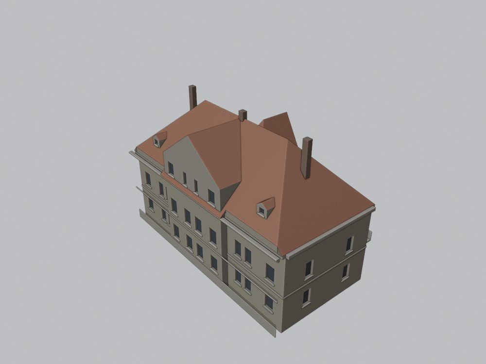
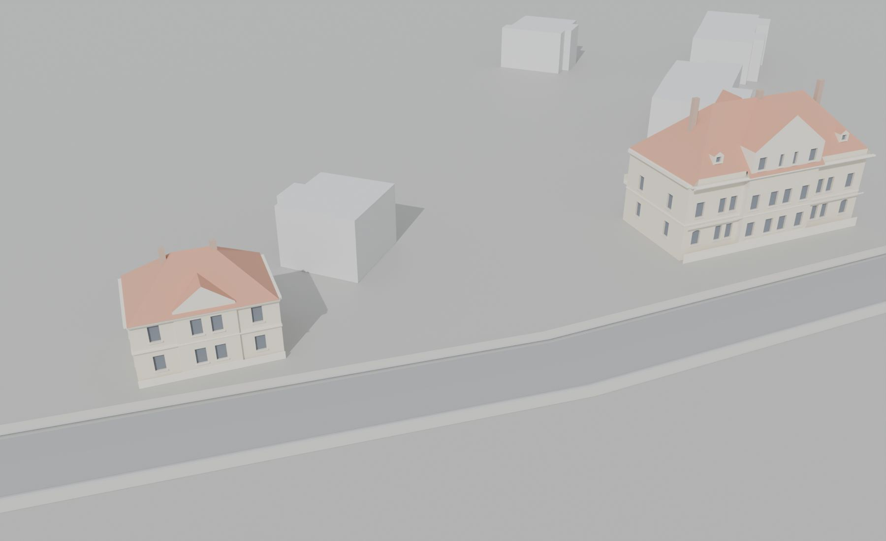
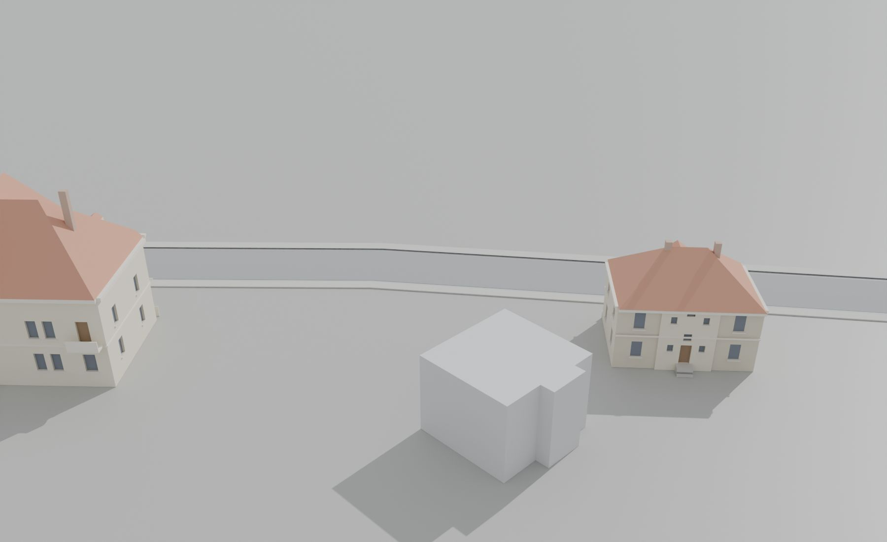
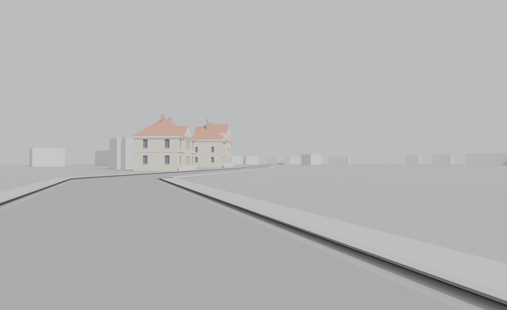
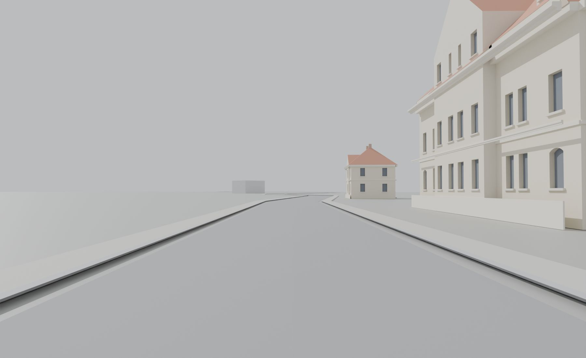
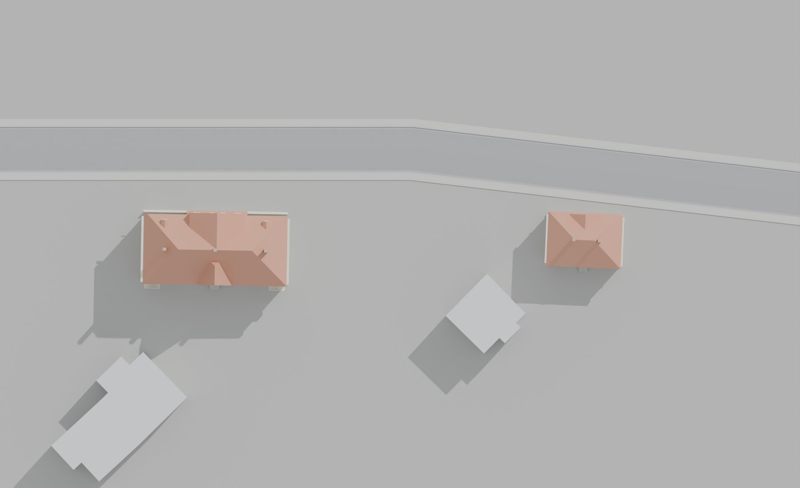
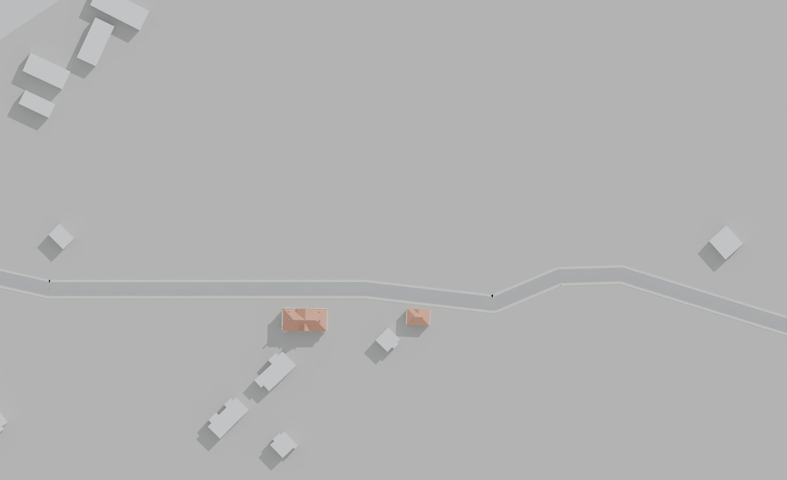
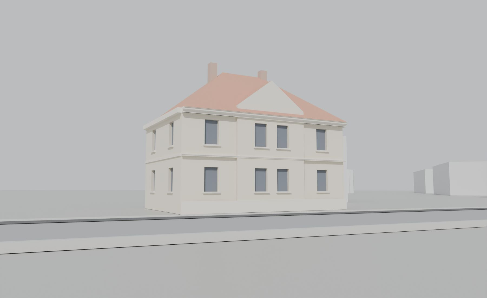
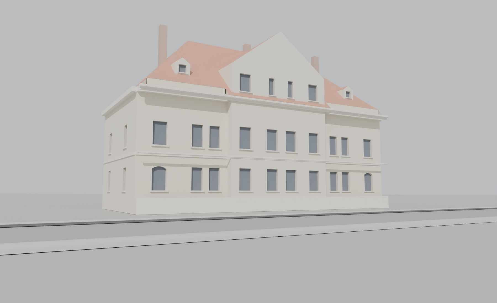

Co kde stálo
Poloha všech domů pochází z GIS vrstvy projektu, která je vektorizací historického plánu města Mostu z roku 1938. Ulice v ní vede jako Pařidelská (něm. Paredler Strasse) od jihozápadu (od U hřiště) k severovýchodu s 8 budovami: 4 s číslem popisným (421 a 1084 na severozápadní straně, 426 a 1425 na jihovýchodní) a 4 bez čísla na jihozápadním konci u hřiště. Liebknechtova ulice odbočuje k jihu hned za dvojvilou 426; za vilami vedla státní dráha, naproti přes silnici ležel Deutscher Sportplatz (situace 1922). Kliknutím na dům v mapě otevřete jeho stránku.
Půdorysy vil jsou v modelu podle kótovaných stavebních plánů (426: 27,00 × 12,35 m s rizalitem 0,8 m, 1922; 1425: 14,00 × 9,20 m, 1925) a jsou ukotvené na polygony GIS; u dvojvily 426 kreslí GIS čelo vystupující 2,1 m, které plán nezná (viz Rozpory).
Úseky ulice
- SZ · severozápadní strana (u hřiště): 421, 1084
- JV · jihovýchodní strana (vily u Liebknechtovy a dráhy): 426, 1425
Databázová oblast „Pařidelská“ a co modelováno není
Oblast Pařidelská v databázi Libuše obsahovala v živém seznamu z 23. 10. 2026 7 struktur (421, 426, 990, 1084, 1124, 1425, 1426). Struktury 426 a 1425 mají druhý záznam v oblasti Liebknechtova, kde jsou uloženy stavební plány a fotografie; z těchto kopií, načtených 23. 10. 2026 jiným vláknem, vznikly oba modely. Struktura 522, zadaná pod Pařidelskou, je v živém seznamu v oblasti Tyršova a v GIS leží pod Jahnovou ulicí 730 m odtud. Při zpracování 29. 10. 2026 archiv neodpovídal (časový limit spojení), proto přílohy oblasti Pařidelská nebylo možné otevřít; domy bez půdorysu v GIS nebo bez dostupného pramene jsou předány jako blocked:
| Čp. | Proč není modelován | Přílohy v databázi |
|---|---|---|
| 990 | bez půdorysu v GIS; přílohy (snímek sdílený s 1124 a 522) 29. 10. 2026 nedostupné | 5 (nedostupné) |
| 1124 | bez půdorysu v GIS; přílohy nedostupné | 5 (nedostupné) |
| 1426 | bez půdorysu v GIS; snímek sdílený s 1084 nedostupný | 5 (nedostupné) |
| 522 | v GIS pod Jahnovou 730 m od Pařidelské, v databázi živě v oblasti Tyršova – identita k ověření; přílohy nedostupné | 21 (nedostupné) |
Odkud jsou prameny
Stavební plány Ernsta Wettsteina 1922 a 1925
Obě vily mají kótované projekty mosteckého stavitele Ernsta Wettsteina pro Theresia Tiefbau-Gewerkschaft: dvojvila 426 z 24. 7. 1922 (Vorderansicht, podkroví, řezy a–b a c–d, půdorysy sklepa, přízemí a patra, situace se silnicí Brüx–Paredl, sportovištěm a dráhou) a vila 1425 ze září 1925 (pohled, řez, půdorysy, krov, situace 1:1440) s plánem oplocení z roku 1926. Projekt není realizace: půdorysy a výšky jsou z plánů, skladbu fasád ověřují fotografie, kde existují.
Fotodokumentace KSPPOP 1974
Fotografie z roku 1974 s kartami Krajského střediska státní památkové péče a ochrany přírody v Ústí nad Labem popisují stanoviště a sousedy: u vily 1425 průčelí z protější strany Pařidelské (vpravo dům 1825, vlevo hradlo starého nádraží), nároží s Liebknechtovou a nádvorní stranu se vstupem; u dvojvily 426 zadní stranu z Liebknechtovy a řadu dvojvil, kde je 426 „poslední vlevo“. Náčrt KSPPOP 1425/1 dává členění střechy. Cílová epocha modelu jsou 70. léta.
Starší plány 1874–1897
Ve struktuře 426 jsou i plány z let 1874, 1878, 1885 a 1897. Patří dřívějšímu domu téhož čísla (jiný půdorys, jiný stavebník) a pro model dvojvily z roku 1922 se nepoužily; zapsáno v knize nesouladů.
Databáze Libuše projektu MOST a výpadek 29. 10. 2026
Databáze byla použita pouze pro čtení (0 zápisů). Seznamy struktur pocházejí z živého načtení oblastí 23. 10. 2026; při zpracování 29. 10. 2026 archiv neodpovídal (spojení vypršelo), takže z 99 příloh 10 struktur (oblasti Pařidelská, Liebknechtova a Tyršova) bylo možné otevřít 30 (30 různých souborů podle SHA-256: 17 plánů a výkresů, 5 fotografií, 5 archivních karet, 2 kolorovaných odvozenin a 1 dalších odvozenin bez tagu), všechny z kopií struktur 426 a 1425 oblasti Liebknechtova. Zbylých 69 příloh (oblast Pařidelská včetně vlastních záznamů 426 a 1425, struktura 522) zůstává nedostupných a budou doplněny, až archiv odpoví; zapsáno v knize nesouladů.
Odvozeniny
Kolorované snímky a výřezy v databázi jsou rekonstrukce, ne prameny. O tvaru, otvorech a nápisech rozhoduje původní černobílá fotografie nebo plán.
GIS a terén
Polohy a natočení domů jsou z GIS vrstvy (vektorizace plánu 1938, místní souřadnice). Půdorysy vil jsou z kótovaných plánů a kotvené na GIS polygony; u 426 GIS kreslí vystupující čelo 20,3 × 2,1 m, které plán nezná. Výšky budov v GIS jsou jen náhodný zástupný údaj: výšky vil jsou z elevací a řezů 1922 a 1925 (projekt, ±0,6 m), skladba z fotografií. Terén je zatím plochý (z = 0 u všech domů); historický výškopis nebyl k dispozici.
Jak vznikla geometrie
- Rešerše plánů. Nejdříve jsme prohledali databázi: ze seznamu 99 příloh (oblasti Pařidelská, Liebknechtova a Tyršova, seznam z 23. 10. 2026) jsme otevřeli 30 dostupných na kontaktních listech, karty jsme četli v plné velikosti a listy použité pro geometrii v plném rozlišení (titulek, datum, měřítko, stavebník, sousedé). 69 příloh archiv 29. 10. 2026 nevydal; plány z let 1874–1897 u domu 426 patří dřívějšímu domu a byly vyřazeny.
- Identita a orientace domů. Situační plánky z let 1922 a 1925 (silnice Brüx–Paredl, Liebknechtova, dráha, sportoviště), popisy stanovišť na kartách KSPPOP a GIS určují, že obě vily stojí na jihovýchodní straně silnice u odbočky Liebknechtovy: 426 blíž k městu, 1425 za ní. Štítové průčelí vily 1425 hledí do Pařidelské, vstup s vnějším schodištěm je na nádvorní straně; dvojvila 426 má Vorderansicht do silnice a balkony dozadu k dráze.
- Fasáda jen z fotografie nebo plánu s domem v rámečku. Na každém použitém snímku a elevaci je dům v červeném rámečku a každý otvor má ID (G okna přízemí, U okna patra, A podkrovní okna, D dveře, B_ zadní fasáda, L_ a R_ křídla, N_ a S_ boční stěny). Počty otvorů z rámečků kontroluje brána proti plánu modelu; otvory, které pramen neukazuje, jsou přiznané hypotézy.
- Měřítko. Výšky a šířky jsou z kótovaných plánů (426: elevace 1922 34,3 px/m a řez c–d; 1425: pohled a řez 1925), u fotografií z roku 1974 poměry (zadní strana 426: 83 px/m). Kde se projekt liší od fotografie, model sleduje fotografii.
- Střecha. Členění střech je z plánů krovu a podkroví a z náčrtu KSPPOP 1425/1, sklony z řezů; střecha hotového modelu se změří ze sítě (426: hřeben 17,0 m, sklon 43,6°; 1425: hřeben 11,4 m).
- Stavba v Blenderu. Parametrický builder bez okna (
build_house_20261028.py, týž jako u ulice U Pražské brány) vyrobí zgeometry_plan.jsonBLEND a GLB. Otvory jsou skutečné niky, štít rizalitu a zadní štít 426 jsou vikýř a křídlo s vlastní zdí, balkony a schodiště jsou boxy, materiály jsou jen ID pro pozdější textury. - Kontrola. Brána geometrie (prosvítání podkroví paprsky, nekryté zdivo, střecha nad prázdnem, UV, síť, počty otvorů) a vizuální kontrola: pohledy s materiály a bez barev (čtyři strany, čtyři rohy shora, dva podhledy u okapu, shora), detaily otvorů a záznam kontroly. Dům se do ulice umístí až po prošlé bráně a prohlédnuté sadě.
- Sestava ulice. Registr
street_layout_gis.jsondrží polohu, natočení a revizi každého domu (rámec X = východ, Y = sever); okolní budovy z GIS zastupují v sestavě šedé bloky, domy 421 a 1084 čekají na prameny.
Pracovní složka: F:\MOST\output\paridelska_street_claude_2026-10-29\ (domy, kontroly, registr poloh; prameny jen ke čtení).
Domy ulice
Domy jsou seřazené po stranách ulice od jihozápadu (od U hřiště). U domů se štítkem je část podoby hypotézou; štítek je stejný na stránce domu, v tabulce, v anglické verzi i v okně 3D prohlížeče.
SZ · severozápadní strana (u hřiště)
Zatím bez modelu v ulici (přílohy 29. 10. 2026 nedostupné, v sestavě jen půdorys z GIS): 421, 1084.
JV · jihovýchodní strana (vily u Liebknechtovy a dráhy)

Přední (uliční) fasáda je doložena jen stavebním plánem z roku 1922 a vzdálenou fotografií; zadní strana je fotografována. Okna, vikýře a výšky jsou projekt, ne zaměření.
dvojvila Theresia Tiefbau-Gewerkschaft s rizalitem a štítem (1922)
16 příloh v databázi · revize r1
bez textur (částečně hypotéza – jen prosté materiály)
vila Theresia Tiefbau-Gewerkschaft s tympanonem (1925)
14 příloh v databázi · revize r1
zatím bez textur
Souhrnná tabulka
| Čp. | Úsek | Typ | Podlaží | Průčelí × okap (m) | GIS budova (popisek) | Přílohy | Revize | Stav |
|---|---|---|---|---|---|---|---|---|
| 421 | SZ | dům na severozápadní straně (prameny nedostupné) | ? | – | 1573 | – | – | čeká na prameny |
| 1084 | SZ | dům na severozápadní straně (prameny nedostupné) | ? | – | 2071 | – | – | čeká na prameny |
| 426 | JV | dvojvila Theresia Tiefbau-Gewerkschaft s rizalitem a štítem (1922) částečně hypotéza Přední (uliční) fasáda je doložena jen stavebním plánem z roku 1922 a vzdálenou fotografií; zadní strana je fotografována. Okna, vikýře a výšky jsou projekt, ne zaměření. | 2 + podkroví | 27,0 × 10,0 | 1570 (426) | 16 | r1 | ve 3D |
| 1425 | JV | vila Theresia Tiefbau-Gewerkschaft s tympanonem (1925) | 2 | 14,0 × 7,1 | 2072 (1425) | 14 | r1 | ve 3D |
| 990 | – | bez půdorysu v GIS; přílohy (snímek sdílený s 1124 a 522) 29. 10. 2026 nedostupné | – | – | bez půdorysu | 5 (nedostupné) | – | blocked |
| 1124 | – | bez půdorysu v GIS; přílohy nedostupné | – | – | bez půdorysu | 5 (nedostupné) | – | blocked |
| 1426 | – | bez půdorysu v GIS; snímek sdílený s 1084 nedostupný | – | – | bez půdorysu | 5 (nedostupné) | – | blocked |
| 522 | – | v GIS pod Jahnovou 730 m od Pařidelské, v databázi živě v oblasti Tyršova – identita k ověření; přílohy nedostupné | – | – | bez půdorysu | 21 (nedostupné) | – | blocked |
Šířka průčelí je z GIS nebo z rektifikované fotografie, výška okapu je odhad z plánů a fotografií. „Čeká na prameny“ = dům má půdorys v GIS, ale jeho přílohy nebylo možné načíst; „blocked“ = bez půdorysu v GIS nebo s nejistou identitou.
Rozpory a hypotézy
- 1425: kam hledí štít a kde je vstup. Plán z roku 1925 kreslí průčelí s tympanonem a vstup s vnějším schodištěm na protilehlých stranách. Karty KSPPOP popisují snímek průčelí „z protější strany Pařidelské“ a snímek vstupu jako „nádvorní stranu“: model proto staví štít do ulice (severozápad) a vstup dozadu (jihovýchod). Opačná orientace by znamenala, že fotograf stál na dráze.
- 426: starší plány ve struktuře. Plány z let 1874, 1878, 1885 a 1897 u domu 426 mají jiný půdorys a jiného stavebníka než projekt dvojvily z roku 1922; patří dřívějšímu domu téhož čísla a nebyly použity.
- 426: půdorys GIS proti plánu. GIS kreslí uliční čelo 20,3 m vystupující o 2,1 m, plán z roku 1922 kótuje 27,00 × 12,35 m s rizalitem 10,45 m vystupujícím 0,8 m. Model drží plán a je ukotven na zadní (jihovýchodní) hranu GIS polygonu; kanonický GIS zůstává beze změny.
- 426: přední fasáda jen z projektu. Vorderansicht 1922 a vzdálená fotografie řady dvojvil jsou jediné prameny uliční strany: deset oken v podlaží, čtyři podkrovní okna rizalitu, vikýře a tři komíny jsou projekt, ne zaměření (štítek částečně hypotéza). Zadní strana je z fotografie z roku 1974 (balkony v nárožích, schodišťové okno, vstup se stupněm).
- Výšky z plánů. Římsa 426 je 10,0 m a hřeben 17,0 m podle elevace a řezu c–d (elevace kreslí hřeben ještě o něco výš, ±0,6 m); u 1425 římsa 7,1 m, vrchol štítu 9,5 m a hřeben 11,4 m podle pohledu a řezu 1925, fotografie potvrzují skladbu, ne rozměry (±0,3 m).
- Boční stěny obou vil mají okna podle půdorysů; žádná fotografie je neukazuje celé (u 1425 je z nároží čitelné jedno okno patra). Zadní přístavky 1425 v GIS polygonu (prádelna, kůlna) a podkrovní okna zadní strany 426 nejsou modelovány; lizény, šambrány, okenice, oválné okénko a kartuše zadního štítu jsou textura.
- Výpadek archivu 29. 10. 2026. Přílohy oblasti Pařidelská (48) a struktury 522 (21) nebylo možné načíst; domy 421 a 1084 mají půdorys v GIS a čekají na prameny, 990, 1124 a 1426 nemají půdorys v GIS, u 522 je identita sporná (GIS ji klade pod Jahnovu 730 m odtud, databáze do oblasti Tyršova).
- Výšky a terén. Terén je plochý (z = 0 u obou vil), ačkoli silnice k Pařidlům stoupá podél dráhy; historický výškopis nebyl k dispozici.
- Dvorní a nedoložené strany jsou bez otvorů, pokud je žádný pramen neukazuje.
Údaje jsou v datech označené jako model_hypothesis, status: provisional, locked: false.
Kniha nesouladů pramenů
Případy, kdy si prameny odporují (plán proti fotografii, GIS proti plánu, chybně zařazený list, nedostupný archiv), zapisujeme do interní knihy nesouladů pramenů projektu MOST. Ta se zatím nepublikuje, proto zde uvádíme jen identifikátory případů této ulice (3):
2026-10-29_paridelska_1425-orientace-stit-k-ulici-vstup-vzadu– Pařidelská 1425: průčelí s tympanonem hledí do Pařidelské, vstup se schodištěm je vzadu – orientaci rozhodly karty, ne plán oplocení2026-10-29_paridelska_426-stare-plany-1874-1897-jiny-dum– Pařidelská 426: plány z let 1874–1897 (Wenzels-Vorstadt, Panzner, Wustel, Spitz) patří dřívějšímu domu č. 426, fotografovaná dvojvila je projekt z roku 19222026-10-29_paridelska_api-vypadek-zdroje-nedostupne– Pařidelská: 29. 10. 2026 archiv Libuše neodpovídal (TCP timeout), dávka začala z kopií jiných vláken – 421, 1084, 990, 1124, 1426 a 522 zůstaly bez pramenů
Textury (Codex)
Geometrie na této stránce je bez textur. Texturované domy bude připravovat Codex na kopiích těchto modelů a doplňovat je postupně: každý dům jako vlastní GLB v models/textured/ a záznam v data/textures.json. Prohlížeč ulice i domu pak sám nabídne povrch Textury (Codex) a texturované domy vloží na jejich místo v ulici; domy se štítkem hypotézy dostanou jen prosté materiály.
Soubory ke stažení
- Celá ulice, GLB (bez zabalených obrázků, materiálová ID; obě vily a šedé bloky okolí)
- GLB jednotlivých domů jsou na jejich stránkách.
- Mapa „co kde stálo“, SVG
- Zpráva v Markdownu se seznamem pramenů všech domů a hashi příloh
- Přehled domů, JSON · Stav textur, JSON · Původ každého souboru tohoto webu

Rendery ulice







